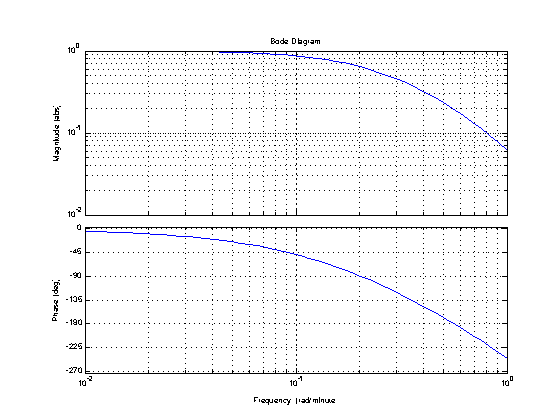
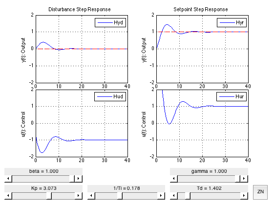

PID Two Degrees of Freedom
File: Ch12_PID_2DOF.m
Topics:
* PID Control * Tuning Rules
To use the publish function with these notes, be sure you have the displaytable.m from the CBE30338 Utilities folder. Also, please note these notes use the Control Systems Toolbox, and require a reasonably current version of Matlab.
Contents
SEMD Example 11.4 with Time Delay
The following diagram shows the basic elements of a feedback control system. D
Two Degree of Freedom Controller
Further improvement in the closed-loop response is possible reconfigure the control loop to provide independent control of the disturbance rejection and setpoint response properties.
_______
Disturbance | |
d(s) --->| Gd(s) |----
|_______| |
_______ _______ _______ v
| | + _ | | | | _ +
r(s)-->| Kr(s) |-->|_|------------->| Gv(s) |-->| Gp(s) |-->|_|--> y(s)
|_______| ^ - |_______| |_______| + |
Controller | Valve/Actuator Process |
| _______ _______ |
| | | | | |
---| Ky(s) |<--| Gm(s) |----------------
|_______| |_______|
Controller MeasurementTransfer functions
Process
Gp = tf([1],[5 1],'TimeUnit','minutes')
Gp =
1
-------
5 s + 1
Continuous-time transfer function.
Disturbance
Gd = Gp
Gd =
1
-------
5 s + 1
Continuous-time transfer function.
Valve Actuator
Gv = tf([1],[2 1],'TimeUnit','minutes')
Gv =
1
-------
2 s + 1
Continuous-time transfer function.
Measurement with Time Delay
Gm = tf([1],[1 1],'ioDelay',1,'TimeUnit','minutes')
Gm =
1
exp(-1*s) * -----
s + 1
Continuous-time transfer function.
Gain Margin
Given the product of transfer functions Gm*Gp*Gv, the gain margin is the critical value of Kp for which the closed-loop becomes unstable. That critical value is called the 'ultimate gain' Kcu.
The gain margin can be found from the Bode plot for Gm*Gp*Gv.
p = bodeoptions; p.FreqUnits = 'rad/minute'; p.MagUnits = 'abs'; p.MagScale = 'log'; w = logspace(-2,0); bodeplot(Gm*Gp*Gv,w,p); grid;
Before going further, use the Bode plot to estimate the cross-over frequency and Kcu.
Two Degree of Freedom Controller
The maximum proportional gain is the gain margin. The gain margin and the cross-over frequency can be computed with the Matlab function margin.
addpath('utilities'); [Kcu,~,wco] = margin(Gm*Gp*Gv); displaytable([Kcu;wco],{'Gain Margin';'Crossover Freq [rad/min]'}); Pu = 2*pi/wco; P = @(Kp) tf([Kp],[1],'TimeUnit','minutes'); I = @(Ti) tf([1],[Ti 0],'TimeUnit','minutes'); D = @(Td) tf([Td 0],[Td/10 1],'TimeUnit','minutes'); PID = @(Kp,Ti,Td,beta,gamma) P(Kp)*(beta + I(Ti) + gamma*D(Td)); % Closed-loop transfer functions Hyd = @(Ky,Kr) Gd/(1 + Gp*Gv*Ky*Gm); Hyr = @(Ky,Kr) Gp*Gv*Kr/(1 + Gp*Gv*Ky*Gm); Hud = @(Ky,Kr) -Ky*Gd/(1 + Ky*Gm*Gp*Gv); Hur = @(Ky,Kr) Kr/(1 + Ky*Gm*Gp*Gv); % Ziegler Nichols Kzn = PID(0.6*Kcu,Pu/2,Pu/8,1,1); % Plot Step Responses t = 0:0.1:40; ax = [min(t) max(t) -2 2]; subplot(7,2,[1 3 5]); hHyd = plot(t,step(Hyd(Kzn,Kzn),t)); hold on; plot(t,0*sign(t),'r--'); hold off; ylabel('y(t): Output');legend('Hyd');axis(ax);grid; title('Disturbance Step Response'); subplot(7,2,[2 4 6]); hHyr = plot(t,step(Hyr(Kzn,Kzn),t)); hold on; plot(t,sign(t),'r--'); hold off; ylabel('y(t): Output');legend('Hyr');axis(ax);grid; title('Setpoint Step Response'); subplot(7,2,[7 9 11]); hHud = plot(t,step(Hud(Kzn,Kzn),t)); ylabel('u(t): Control');legend('Hud');axis(ax);grid; subplot(7,2,[8 10 12]); hHur = plot(t,step(Hur(Kzn,Kzn),t)); ylabel('u(t): Control');legend('Hur');axis(ax);grid; update = @(Kp,Ti,Td,beta,gamma) { suiPlot(hHyd,t,step(Hyd(PID(Kp,Ti,Td,1,1),PID(Kp,Ti,Td,beta,gamma)),t)); suiPlot(hHyr,t,step(Hyr(PID(Kp,Ti,Td,1,1),PID(Kp,Ti,Td,beta,gamma)),t)); suiPlot(hHud,t,step(Hud(PID(Kp,Ti,Td,1,1),PID(Kp,Ti,Td,beta,gamma)),t)); suiPlot(hHur,t,step(Hur(PID(Kp,Ti,Td,1,1),PID(Kp,Ti,Td,beta,gamma)),t))}; [Kp,loc] = suiSlider(0,Kcu,0.6*Kcu,'Kp'); [beta] = suiSlider(0,1,1,'beta',loc.Above); [invTi,loc] = suiSlider(0.01,5/Pu,2/Pu,'1/Ti',loc.Right); [Td,loc] = suiSlider(0,Pu,Pu/8,'Td',loc.Right); [gamma] = suiSlider(0,1,1,'gamma',loc.Above); zntuning = @() { Kp(0.6*Kcu); invTi(2/Pu); Td(Pu/8)}; suiButton(zntuning,'ZN',loc.Right); suiUpdate(@()update(Kp(),1/invTi(),Td(),beta(),gamma()));
Gain Margin 5.1215 Crossover Freq [rad/min] 0.56032